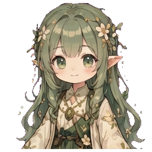
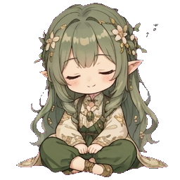

Mori Sprite Studio
Web tool to build 1024×1024 4×4 sprite animation packs from a single character reference image. AI-powered. Browser-only. Transparent backgrounds. Multiple export formats.


What it does
You give it one reference image of your character. It produces a complete sprite animation pack for mori-desktop — 6 animated states (idle / sleeping / recording / thinking / done / error), each a 1024×1024 4×4 sprite sheet that the floating window plays back.
It's built for Mori — yazelin's 森林精靈 (forest spirit) Jarvis-style AI partner who lives on the desktop. "Iron Man 有 Jarvis,我有 Mori。" This studio makes Mori's visible body — her sprite form — that the mori-desktop floating window animates.
The studio also works for any character you want to give a visible form to: your own AI partner / personal spirit / streamer overlay companion / character mascot. The Mori demo is one example of what's possible.
You can also export each state as APNG, GIF, WebM, or just the raw sheet PNG — useful for LINE animated stickers, Discord, OBS overlays, video editing, etc.

Workflow
- Upload character ref — any PNG/JPG of your character (cropped, any background).
- Generate 6 statics — one AI call produces a 3×2 grid the tool splits into 6 state poses.
- Per-state animation — pre-tiled placeholder + multi-anchor identity reference keeps the character locked in position with only subtle motion (blink, breath, gesture).
- Fine-tune — per-cell regen, loop config, cross-state normalize, scale/offset sliders with reference guides, manual upload/download round-trip.
- Backdrop (optional) — Light + Dark backdrop PNGs ship inside the pack.
- Export
.moripack.zipfor mori-desktop, or individual APNG / GIF / WebM for other platforms.

Features
4 AI providers
Author Fallback (free, no setup), Codex-Image (ChatGPT Plus quota), Vertex Gemini, Google Gemini Direct.
Anti-jitter
Pre-tiled placeholder sheet as AI reference locks character position across all 16 frames.
Anti-character-drift
Multi-anchor identity reference sends every other state's static so outfit/hair stays consistent.
Anatomy-agnostic
Works for humanoid / plant / robot / blob / gem. Semantics describe motion abstractly.
One-shot patterns
BURST-AND-SETTLE for celebrations vs SUSTAINED-ENERGY for distress.
Per-cell regen
Click any frame to regen just that cell with prev+next frames as context.
Chroma key + edge erosion
Green or magenta, 3 tolerance levels, 0-10 px erosion. Re-chroma replays from raw output (non-destructive).
Cross-state normalize
One-click scans bboxes + computes per-state transform so all 6 states match in size + center.
Multiple export formats
.moripack.zip / APNG / GIF / WebM with VP9 alpha / raw sheet / .moriproject.zip save-load.
Per-character backdrop
Light + Dark backdrop PNGs ship per mori-desktop PR #107 backplate chain.
BYOG path
Bring Your Own Generation — copy prompt + reference, run AI yourself, upload result.
Demo loader
One-click loads a fully-configured 22 MB Mori demo so new visitors see everything immediately.

File formats
| Format | Use case | Plays in |
|---|---|---|
.moripack.zip | Consumer format for mori-desktop | mori-desktop floating widget |
.moriproject.zip | Author format — resume editing later | This studio (load button) |
| APNG (.png) | Transparent + looping. LINE animated stickers / Discord / Slack / Twitter inline | Browsers + LINE + Discord |
| GIF (.gif) | Universal compatibility, 1-bit alpha (edges slightly crusty) | Mac Preview, Windows Photos, anywhere |
| WebM (.webm) | VP9 + alpha. OBS streaming overlays, QuickTime | Browsers, OBS, video editors |
| Raw sheet (.png) | The 1024×1024 4×4 sheet itself | Photoshop / external edit |

Quick start
Use the live app
- Open mori-sprite-studio.vercel.app
- Click
✦ 載入 Mori Demoon the project page (one-click loads a fully-configured Mori character pack — 22 MB) - Browse around, see how it works
- To make your own: clear data (or use incognito), upload your character ref, click
生 6 狀態靜態→ per-state生動畫
Author Fallback uses yazelin's own API key — no setup needed. I'm fronting the cost out of pocket so strangers can try the tool. ⚠ Per-IP cap is 100 req/day + 1 concurrent. Quota counter lives in the sidebar footer. When the budget runs out, it stops — not a long-term promise, just letting people experience the tool. If you want it to stay available, ☕ chip in.
Self-host
git clone https://github.com/yazelin/mori-sprite-studio
cd mori-sprite-studio
npm install
npm run dev # Vite dev server
# OR
npm run dev:vercel # vercel dev — for testing /api/generate Author Fallback proxy
Set env vars in .env.local if using Author Fallback locally:
AUTHOR_FALLBACK_PROVIDER=vertex-gemini
AUTHOR_API_KEY=AIza...
AUTHOR_MODEL=gemini-3-pro-image-preview
AUTHOR_IMAGE_SIZE=1KArchitecture
| Layer | Tech |
|---|---|
| UI | Vite + React 19 + TypeScript + Tailwind CSS + shadcn/ui |
| State | Zustand + IndexedDB (idb-keyval) for Blob-native persistence |
| AI providers | Abstract ImageProvider interface, 4 impls |
| Chroma key | 2-pass per-channel dominance + despill + edge erosion |
| Animation preview | Canvas + requestAnimationFrame (16-frame row-major) |
| Export encoders | upng-js (APNG), gifenc (GIF), MediaRecorder + VP9 (WebM), JSZip |
| Server-side | Vercel Function /api/generate — Author Fallback proxy |
Output spec: 1024×1024 PNG-32, 4×4 grid, 256×256 per cell, row-major frame order, transparent background. Conforms to mori-desktop's character-pack.md v1.0.
Running on love + caffeine ☕
This is a personal passion project. If you find it useful, please consider:
Self-funded out of pocket. Coffee = direct support for more API quota in the Author Fallback bucket (so it doesn't run dry for newcomers), Vercel / domain costs, and time + caffeine to keep building.
Related projects
- mori-desktop — 森林精靈 Mori 的桌面身體. yazelin's Jarvis-style AI partner. Rust + Tauri 2 + Whisper(耳)+ LLM(腦). This studio produces her visible sprite form.
- world-tree — Mori's origin / 世界樹. Where Mori 來自.
- codex-image-service — self-host ChatGPT Plus/Pro quota as image-gen API (one of the providers)
- line-sticker-studio — sister tool, LINE sticker authoring (some prompt engineering patterns shared)
- emoji-slot-machine — sister tool, 3×3 emoji slot machine generator (some sprite-sheet animation patterns shared)